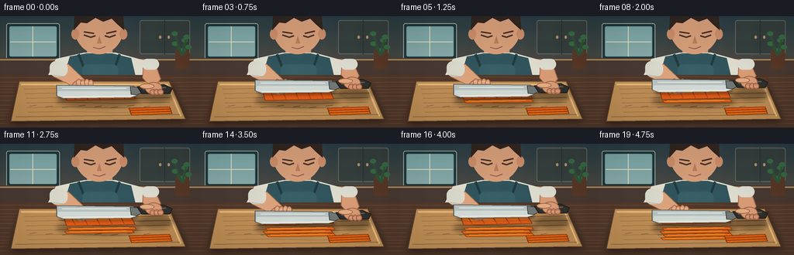
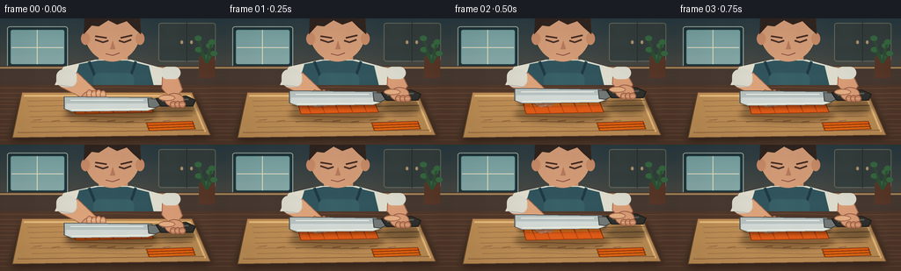

CODING AGENTS AS PIXEL WORLD MODELS
traex/GPT-5.6-Sol · motion_rationality_0015
点击播放 · 原生 RGB 像素
逐轮保存的候选
回放视频、检查图与代码变化。
每份候选均可单独播放。实际图片检查记录在下方工具轨迹中。
候选 01播放与检查图
点击播放 · 原生 RGB 像素

展开代码变化
--- 上一保存版本
+++ 本次保存版本
@@ -0,0 +1,204 @@
+from pathlib import Path
+import math
+import numpy as np
+from PIL import Image, ImageDraw, ImageFilter
+import artifact_io
+
+W,H,N = 256,144,20
+S=4
+rng=np.random.default_rng(15)
+
+def sc(v): return int(round(v*S))
+def pts(p): return [(sc(x),sc(y)) for x,y in p]
+def ellipse(d, box, fill, outline=None, width=1):
+ d.ellipse(tuple(sc(v) for v in box), fill=fill, outline=outline, width=sc(width) if outline else 1)
+def poly(d, p, fill, outline=None, width=1):
+ d.polygon(pts(p), fill=fill)
+ if outline: d.line(pts(p+[p[0]]), fill=outline, width=sc(width), joint='curve')
+def line(d,p,fill,width=1): d.line(pts(p),fill=fill,width=sc(width),joint='curve')
+def rr(d,box,r,fill,outline=None,width=1): d.rounded_rectangle(tuple(sc(v) for v in box),radius=sc(r),fill=fill,outline=outline,width=sc(width))
+
+def shadow_layer(shapes, blur=4):
+ lay=Image.new('RGBA',(W*S,H*S),(0,0,0,0)); d=ImageDraw.Draw(lay)
+ for typ, geo, color in shapes:
+ if typ=='poly': d.polygon(pts(geo),fill=color)
+ elif typ=='ellipse': d.ellipse(tuple(sc(v) for v in geo),fill=color)
+ else: d.rounded_rectangle(tuple(sc(v) for v in geo),radius=sc(geo[-1]),fill=color)
+ return lay.filter(ImageFilter.GaussianBlur(sc(blur)))
+
+def make_frame(i):
+ # warm kitchen background, hand-painted gradients
+ yy=np.linspace(0,1,H*S)[:,None,None]
+ top=np.array([42,61,67])[None,None,:]; bot=np.array([119,91,67])[None,None,:]
+ arr=np.tile(top*(1-yy)+bot*yy,(1,W*S,1)).astype(np.uint8)
+ im=Image.fromarray(arr,'RGB').convert('RGBA'); d=ImageDraw.Draw(im)
+ # softly defocused kitchen setting
+ rr(d,(8,9,77,56),3,(31,53,58,255),(156,173,162,120),1)
+ # window panes and morning light
+ rr(d,(12,13,73,52),2,(112,157,157,255))
+ for y in range(14,52):
+ c=(118+int(y*.35),164+int(y*.12),164+int(y*.08),255)
+ d.line((sc(13),sc(y),sc(72),sc(y)),fill=c,width=sc(1))
+ line(d,[(42,13),(42,52)],(225,225,200,150),1); line(d,[(13,33),(72,33)],(225,225,200,150),1)
+ # back counter/cabinets
+ rr(d,(180,5,245,49),3,(53,63,62,255),(101,105,94,255),1)
+ line(d,[(212,5),(212,49)],(41,49,49,255),1)
+ ellipse(d,(205,25,208,29),(170,148,110,255)); ellipse(d,(216,25,219,29),(170,148,110,255))
+ d.rectangle((0,sc(54),W*S,sc(78)),fill=(72,58,50,255))
+ line(d,[(0,56),(256,56)],(168,133,91,150),2)
+ # plant silhouette
+ rr(d,(226,43,244,68),2,(88,55,39,255))
+ for a in range(6):
+ x=235+math.sin(a*2.2)*10; y=44-a*4.3
+ line(d,[(235,51),(x,y)],(46,81,52,255),2)
+ ellipse(d,(x-4,y-3,x+4,y+3),(55,105,65,255))
+
+ # person behind work surface -- head looking down
+ # neck
+ rr(d,(112,37,145,62),8,(203,145,108,255))
+ # torso: white shirt shoulders then denim apron
+ poly(d,[(61,78),(72,55),(108,47),(149,47),(186,57),(206,83)],(224,222,207,255))
+ poly(d,[(90,52),(111,48),(145,48),(169,54),(178,91),(78,91)],(50,85,93,255))
+ line(d,[(101,49),(111,74)],(32,60,66,255),3); line(d,[(154,49),(145,75)],(32,60,66,255),3)
+ rr(d,(106,62,152,91),7,(56,95,101,255))
+ # apron seam/pocket
+ line(d,[(109,78),(149,78)],(94,127,129,255),1)
+ line(d,[(116,78),(116,89)],(41,74,80,255),1); line(d,[(143,78),(143,89)],(41,74,80,255),1)
+ # head and ears
+ ellipse(d,(96,-18,159,49),(213,157,120,255))
+ ellipse(d,(92,16,102,30),(200,139,104,255)); ellipse(d,(154,16,164,30),(200,139,104,255))
+ # hair shape
+ poly(d,[(95,18),(96,0),(105,-13),(148,-12),(159,0),(160,18),(151,10),(144,3),(133,7),(123,2),(112,9),(104,8)],(49,37,32,255))
+ # ears/nose, focused downward eyes
+ line(d,[(108,24),(117,27),(123,25)],(75,51,42,255),2)
+ line(d,[(135,25),(141,27),(149,24)],(75,51,42,255),2)
+ poly(d,[(128,25),(125,35),(131,35)],(185,123,92,255))
+ line(d,[(120,40),(128,42),(136,39)],(120,69,56,255),1)
+ # brows
+ line(d,[(108,20),(121,22)],(73,46,37,255),2); line(d,[(137,22),(150,19)],(73,46,37,255),2)
+
+ # worktop
+ d.rectangle((0,sc(76),W*S,H*S),fill=(82,57,43,255))
+ # wood grain
+ for j in range(13):
+ y=79+j*5+math.sin(j)*1.2
+ line(d,[(0,y),(65,y+.5),(126,y-1),(190,y+1),(256,y)],(106,73,52,100),1)
+ # board cast shadow
+ im.alpha_composite(shadow_layer([('poly',[(27,91),(219,88),(241,136),(12,139)],(0,0,0,115))],5))
+ d=ImageDraw.Draw(im)
+ # cutting board trapezoid
+ board=[(25,84),(218,84),(239,133),(14,136)]
+ poly(d,board,(191,143,86,255),(105,70,45,255),1)
+ # rounded visual rim and wood grain
+ line(d,[(27,88),(216,88),(233,129)],(232,188,125,255),2)
+ line(d,[(20,130),(232,127)],(138,94,57,255),1)
+ for j in range(6):
+ y=94+j*6
+ line(d,[(31+j,y),(89,y-1),(151,y+.4),(221-j,y-1)],(164,116,71,100),1)
+ # tiny board knife marks
+ for j in range(9):
+ x=38+j*21
+ line(d,[(x,116+(j%3)),(x+9,115+(j%3))],(147,101,64,110),1)
+
+ cycle=i//5
+ phase=(i%5)/4.0
+ # smooth up-and-down: contact at both ends, apex halfway
+ lift=9.5*math.sin(math.pi*phase)
+ knife_y=105-cycle*1.15-lift
+ completed=cycle + (1 if i%5==4 else 0)
+ completed=min(4,completed)
+
+ # object shadows
+ im.alpha_composite(shadow_layer([
+ ('ellipse',(73,100,181,118),(55,28,10,100)),
+ ('ellipse',(176,94-lift*.25,224,111-lift*.25),(0,0,0,90))],3))
+ d=ImageDraw.Draw(im)
+
+ # carrot slab/block on board, narrowing after cuts
+ near=108.0-completed*1.25
+ block=[(82,95),(169,94),(174,near-1),(86,near+1)]
+ poly(d,block,(224,91,23,255),(139,54,16,255),1)
+ # top highlight and characteristic pale core
+ poly(d,[(84,96),(168,95),(170,98),(85,99)],(245,125,36,255))
+ line(d,[(91,99),(158,98)],(255,159,51,190),1)
+ # carrot peel striations
+ for j in range(5):
+ x=92+j*16
+ line(d,[(x,96),(x+5,near-.5)],(190,69,17,140),1)
+
+ # finished matchsticks accumulate toward viewer; new ones shift slightly
+ for k in range(completed):
+ sy=109+k*4.2
+ # alternating angle creates natural pile but remains clearly long sticks
+ dx=[2,-1,3,0][k]
+ stick=[(84+dx,sy),(171+dx,sy-1.6),(174+dx,sy+1.7),(87+dx,sy+3.0)]
+ poly(d,stick,(239,105+3*k,23,255),(151,60,12,255),1)
+ line(d,[(90+dx,sy+.6),(164+dx,sy-.8)],(255,162,47,220),1)
+ # a few previously prepared sticks neatly at right, reinforcing task semantics
+ for k in range(3):
+ sy=119+k*3
+ poly(d,[(166+k,sy),(218+k,sy-2),(220+k,sy+1),(168+k,sy+3)],(232,96+k*5,18,255),(139,58,14,255),1)
+
+ # arms. Forearms from rolled sleeves to hands
+ # left arm reaching diagonally
+ poly(d,[(70,61),(88,62),(110,83),(101,96),(85,86),(69,78)],(221,164,124,255),(171,111,81,255),1)
+ rr(d,(64,58,87,78),8,(219,217,204,255))
+ line(d,[(68,76),(85,78)],(177,176,167,255),1)
+ # right forearm follows knife handle subtly
+ hy=-lift*.58
+ poly(d,[(185,59),(201,64),(207,81+hy),(197,94+hy),(184,80+hy)],(218,158,119,255),(167,106,78,255),1)
+ rr(d,(183,55,205,69),7,(221,220,208,255))
+
+ # left stabilizing claw, safely behind cutting line
+ hand_y=-cycle*.55
+ ellipse(d,(92,82+hand_y,118,101+hand_y),(216,153,113,255),(161,98,71,255),1)
+ # curled fingers, knuckles visible
+ for k in range(4):
+ x=98+k*5.2
+ ellipse(d,(x,81+hand_y+(k%2),x+7,91+hand_y+(k%2)),(223,164,123,255),(166,104,75,255),1)
+ line(d,[(x+1,85+hand_y+(k%2)),(x+5,85+hand_y+(k%2))],(238,188,150,255),1)
+ # tucked fingertips on far side
+ ellipse(d,(99,93+hand_y,107,101+hand_y),(202,137,99,255))
+ ellipse(d,(109,92+hand_y,117,100+hand_y),(202,137,99,255))
+
+ # knife: metallic chef blade, edge stays horizontal with carrot for lengthwise julienne
+ by=knife_y
+ blade=[(73,by-16),(172,by-15),(177,by-3),(168,by),(82,by+1),(73,by-2)]
+ # knife shadow close under blade
+ im.alpha_composite(shadow_layer([('poly',[(75,by-1),(178,by-3),(176,by+3),(79,by+4)],(0,0,0,100))],2))
+ d=ImageDraw.Draw(im)
+ poly(d,blade,(183,194,193,255),(71,77,77,255),1)
+ # cool steel lower gradient strips
+ poly(d,[(75,by-8),(173,by-8),(177,by-3),(168,by),(82,by+1),(74,by-2)],(211,218,214,255))
+ line(d,[(82,by-1),(168,by-2),(177,by-4)],(249,247,224,255),1)
+ line(d,[(80,by-12),(163,by-12)],(237,241,232,180),1)
+ # blade heel/tang and dark handle
+ poly(d,[(168,by-14),(180,by-13),(184,by-7),(176,by-3),(169,by-4)],(114,121,118,255),(58,62,62,255),1)
+ poly(d,[(177,by-14),(211,by-17),(222,by-12),(219,by-5),(183,by-5)],(48,48,45,255),(27,28,27,255),1)
+ line(d,[(184,by-11),(214,by-13)],(95,92,78,255),2)
+ ellipse(d,(205,by-14,209,by-10),(174,154,113,255))
+
+ # gripping right hand around handle, fingers wrap naturally and move with it
+ gy=by-14
+ ellipse(d,(187,gy-6,209,gy+10),(218,157,118,255),(158,98,72,255),1)
+ # thumb on upper handle
+ ellipse(d,(180,gy-4,199,gy+3),(229,174,131,255),(164,103,75,255),1)
+ for k in range(3):
+ x=193+k*5
+ ellipse(d,(x,gy+3,x+8,gy+11),(205,139,102,255),(151,91,67,255),1)
+ line(d,[(x+2,gy+7),(x+6,gy+7)],(233,178,138,255),1)
+
+ # warm directional glint and restrained vignette
+ rgb=np.array(im.convert('RGB').resize((W,H),Image.Resampling.LANCZOS)).astype(np.float32)
+ Y,X=np.mgrid[0:H,0:W]
+ vign=1-0.14*np.clip(((X-W/2)/(W*.72))**2+((Y-H/2)/(H*.72))**2,0,1)
+ rgb*=vign[...,None]
+ # fine stable texture, mild enough not to flicker
+ tex=(np.sin(X*.17)+np.sin(Y*.31))*0.65
+ rgb+=tex[...,None]
+ return np.clip(rgb,0,255).astype(np.uint8)
+
+frames=np.stack([make_frame(i) for i in range(N)],axis=0)
+assert frames.shape==(20,144,256,3) and frames.dtype==np.uint8
+artifact_io.save(frames,Path(__file__).resolve().parent)
+print('saved',frames.shape,frames.dtype)
可观测工具轨迹
实际执行的命令与返回图片。
命令 1exit 0
/bin/bash -lc "cat prompt.txt && printf '\\n---RULES---\\n' && cat GENERATION_RULES.md && printf '\\n---SPEC---\\n' && cat task_spec.json"
命令 2exit 0
/bin/bash -lc "find . -maxdepth 2 -type f -printf '%p\\n' | sort && printf '\\nTOOLS\\n' && command -v ffmpeg && command -v python3 && command -v convert || true"
命令 3exit 0
/bin/bash -lc "sed -n '1,240p' artifact_io.py"
命令 4exit 0
/bin/bash -lc "cat > generate.py <<'PY'
from pathlib import Path
import math
import numpy as np
from PIL import Image, ImageDraw, ImageFilter
import artifact_io
W,H,N = 256,144,20
S=4
rng=np.random.default_rng(15)
def sc(v): return int(round(v*S))
def pts(p): return [(sc(x),sc(y)) for x,y in p]
def ellipse(d, box, fill, outline=None, width=1):
d.ellipse(tuple(sc(v) for v in box), fill=fill, outline=outline, width=sc(width) if outline else 1)
def poly(d, p, fill, outline=None, width=1):
d.polygon(pts(p), fill=fill)
if outline: d.line(pts(p+[p[0]]), fill=outline, width=sc(width), joint='curve')
def line(d,p,fill,width=1): d.line(pts(p),fill=fill,width=sc(width),joint='curve')
def rr(d,box,r,fill,outline=None,width=1): d.rounded_rectangle(tuple(sc(v) for v in box),radius=sc(r),fill=fill,outline=outline,width=sc(width))
def shadow_layer(shapes, blur=4):
lay=Image.new('RGBA',(W*S,H*S),(0,0,0,0)); d=ImageDraw.Draw(lay)
for typ, geo, color in shapes:
if typ=='poly': d.polygon(pts(geo),fill=color)
elif typ=='ellipse': d.ellipse(tuple(sc(v) for v in geo),fill=color)
else: d.rounded_rectangle(tuple(sc(v) for v in geo),radius=sc(geo[-1]),fill=color)
return lay.filter(ImageFilter.GaussianBlur(sc(blur)))
def make_frame(i):
# warm kitchen background, hand-painted gradients
yy=np.linspace(0,1,H*S)[:,None,None]
top=np.array([42,61,67])[None,None,:]; bot=np.array([119,91,67])[None,None,:]
arr=np.tile(top*(1-yy)+bot*yy,(1,W*S,1)).astype(np.uint8)
im=Image.fromarray(arr,'RGB').convert('RGBA'); d=ImageDraw.Draw(im)
# softly defocused kitchen setting
rr(d,(8,9,77,56),3,(31,53,58,255),(156,173,162,120),1)
# window panes and morning light
rr(d,(12,13,73,52),2,(112,157,157,255))
for y in range(14,52):
c=(118+int(y*.35),164+int(y*.12),164+int(y*.08),255)
d.line((sc(13),sc(y),sc(72),sc(y)),fill=c,width=sc(1))
line(d,[(42,13),(42,52)],(225,225,200,150),1); line(d,[(13,33),(72,33)],(225,225,200,150),1)
# back counter/cabinets
rr(d,(180,5,245,49),3,(53,63,62,255),(101,105,94,255),1)
line(d,[(212,5),(212,49)],(41,49,49,255),1)
ellipse(d,(205,25,208,29),(170,148,110,255)); ellipse(d,(216,25,219,29),(170,148,110,255))
d.rectangle((0,sc(54),W*S,sc(78)),fill=(72,58,50,255))
line(d,[(0,56),(256,56)],(168,133,91,150),2)
# plant silhouette
rr(d,(226,43,244,68),2,(88,55,39,255))
for a in range(6):
x=235+math.sin(a*2.2)*10; y=44-a*4.3
line(d,[(235,51),(x,y)],(46,81,52,255),2)
ellipse(d,(x-4,y-3,x+4,y+3),(55,105,65,255))
# person behind work surface -- head looking down
# neck
rr(d,(112,37,145,62),8,(203,145,108,255))
# torso: white shirt shoulders then denim apron
poly(d,[(61,78),(72,55),(108,47),(149,47),(186,57),(206,83)],(224,222,207,255))
poly(d,[(90,52),(111,48),(145,48),(169,54),(178,91),(78,91)],(50,85,93,255))
line(d,[(101,49),(111,74)],(32,60,66,255),3); line(d,[(154,49),(145,75)],(32,60,66,255),3)
rr(d,(106,62,152,91),7,(56,95,101,255))
# apron seam/pocket
line(d,[(109,78),(149,78)],(94,127,129,255),1)
line(d,[(116,78),(116,89)],(41,74,80,255),1); line(d,[(143,78),(143,89)],(41,74,80,255),1)
# head and ears
ellipse(d,(96,-18,159,49),(213,157,120,255))
ellipse(d,(92,16,102,30),(200,139,104,255)); ellipse(d,(154,16,164,30),(200,139,104,255))
# hair shape
poly(d,[(95,18),(96,0),(105,-13),(148,-12),(159,0),(160,18),(151,10),(144,3),(133,7),(123,2),(112,9),(104,8)],(49,37,32,255))
# ears/nose, focused downward eyes
line(d,[(108,24),(117,27),(123,25)],(75,51,42,255),2)
line(d,[(135,25),(141,27),(149,24)],(75,51,42,255),2)
poly(d,[(128,25),(125,35),(131,35)],(185,123,92,255))
line(d,[(120,40),(128,42),(136,39)],(120,69,56,255),1)
# brows
line(d,[(108,20),(121,22)],(73,46,37,255),2); line(d,[(137,22),(150,19)],(73,46,37,255),2)
# worktop
d.rectangle((0,sc(76),W*S,H*S),fill=(82,57,43,255))
# wood grain
for j in range(13):
y=79+j*5+math.sin(j)*1.2
line(d,[(0,y),(65,y+.5),(126,y-1),(190,y+1),(256,y)],(106,73,52,100),1)
# board cast shadow
im.alpha_composite(shadow_layer([('poly',[(27,91),(219,88),(241,136),(12,139)],(0,0,0,115))],5))
d=ImageDraw.Draw(im)
# cutting board trapezoid
board=[(25,84),(218,84),(239,133),(14,136)]
poly(d,board,(191,143,86,255),(105,70,45,255),1)
# rounded visual rim and wood grain
line(d,[(27,88),(216,88),(233,129)],(232,188,125,255),2)
line(d,[(20,130),(232,127)],(138,94,57,255),1)
for j in range(6):
y=94+j*6
line(d,[(31+j,y),(89,y-1),(151,y+.4),(221-j,y-1)],(164,116,71,100),1)
# tiny board knife marks
for j in range(9):
x=38+j*21
line(d,[(x,116+(j%3)),(x+9,115+(j%3))],(147,101,64,110),1)
cycle=i//5
phase=(i%5)/4.0
# smooth up-and-down: contact at both ends, apex halfway
lift=9.5*math.sin(math.pi*phase)
knife_y=105-cycle*1.15-lift
completed=cycle + (1 if i%5==4 else 0)
completed=min(4,completed)
# object shadows
im.alpha_composite(shadow_layer([
('ellipse',(73,100,181,118),(55,28,10,100)),
('ellipse',(176,94-lift*.25,224,111-lift*.25),(0,0,0,90))],3))
d=ImageDraw.Draw(im)
# carrot slab/block on board, narrowing after cuts
near=108.0-completed*1.25
block=[(82,95),(169,94),(174,near-1),(86,near+1)]
poly(d,block,(224,91,23,255),(139,54,16,255),1)
# top highlight and characteristic pale core
poly(d,[(84,96),(168,95),(170,98),(85,99)],(245,125,36,255))
line(d,[(91,99),(158,98)],(255,159,51,190),1)
# carrot peel striations
for j in range(5):
x=92+j*16
line(d,[(x,96),(x+5,near-.5)],(190,69,17,140),1)
# finished matchsticks accumulate toward viewer; new ones shift slightly
for k in range(completed):
sy=109+k*4.2
# alternating angle creates natural pile but remains clearly long sticks
dx=[2,-1,3,0][k]
stick=[(84+dx,sy),(171+dx,sy-1.6),(174+dx,sy+1.7),(87+dx,sy+3.0)]
poly(d,stick,(239,105+3*k,23,255),(151,60,12,255),1)
line(d,[(90+dx,sy+.6),(164+dx,sy-.8)],(255,162,47,220),1)
# a few previously prepared sticks neatly at right, reinforcing task semantics
for k in range(3):
sy=119+k*3
poly(d,[(166+k,sy),(218+k,sy-2),(220+k,sy+1),(168+k,sy+3)],(232,96+k*5,18,255),(139,58,14,255),1)
# arms. Forearms from rolled sleeves to hands
# left arm reaching diagonally
poly(d,[(70,61),(88,62),(110,83),(101,96),(85,86),(69,78)],(221,164,124,255),(171,111,81,255),1)
rr(d,(64,58,87,78),8,(219,217,204,255))
line(d,[(68,76),(85,78)],(177,176,167,255),1)
# right forearm follows knife handle subtly
hy=-lift*.58
poly(d,[(185,59),(201,64),(207,81+hy),(197,94+hy),(184,80+hy)],(218,158,119,255),(167,106,78,255),1)
rr(d,(183,55,205,69),7,(221,220,208,255))
# left stabilizing claw, safely behind cutting line
hand_y=-cycle*.55
ellipse(d,(92,82+hand_y,118,101+hand_y),(216,153,113,255),(161,98,71,255),1)
# curled fingers, knuckles visible
for k in range(4):
x=98+k*5.2
ellipse(d,(x,81+hand_y+(k%2),x+7,91+hand_y+(k%2)),(223,164,123,255),(166,104,75,255),1)
line(d,[(x+1,85+hand_y+(k%2)),(x+5,85+hand_y+(k%2))],(238,188,150,255),1)
# tucked fingertips on far side
ellipse(d,(99,93+hand_y,107,101+hand_y),(202,137,99,255))
ellipse(d,(109,92+hand_y,117,100+hand_y),(202,137,99,255))
# knife: metallic chef blade, edge stays horizontal with carrot for lengthwise julienne
by=knife_y
blade=[(73,by-16),(172,by-15),(177,by-3),(168,by),(82,by+1),(73,by-2)]
# knife shadow close under blade
im.alpha_composite(shadow_layer([('poly',[(75,by-1),(178,by-3),(176,by+3),(79,by+4)],(0,0,0,100))],2))
d=ImageDraw.Draw(im)
poly(d,blade,(183,194,193,255),(71,77,77,255),1)
# cool steel lower gradient strips
poly(d,[(75,by-8),(173,by-8),(177,by-3),(168,by),(82,by+1),(74,by-2)],(211,218,214,255))
line(d,[(82,by-1),(168,by-2),(177,by-4)],(249,247,224,255),1)
line(d,[(80,by-12),(163,by-12)],(237,241,232,180),1)
# blade heel/tang and dark handle
poly(d,[(168,by-14),(180,by-13),(184,by-7),(176,by-3),(169,by-4)],(114,121,118,255),(58,62,62,255),1)
poly(d,[(177,by-14),(211,by-17),(222,by-12),(219,by-5),(183,by-5)],(48,48,45,255),(27,28,27,255),1)
line(d,[(184,by-11),(214,by-13)],(95,92,78,255),2)
ellipse(d,(205,by-14,209,by-10),(174,154,113,255))
# gripping right hand around handle, fingers wrap naturally and move with it
gy=by-14
ellipse(d,(187,gy-6,209,gy+10),(218,157,118,255),(158,98,72,255),1)
# thumb on upper handle
ellipse(d,(180,gy-4,199,gy+3),(229,174,131,255),(164,103,75,255),1)
for k in range(3):
x=193+k*5
ellipse(d,(x,gy+3,x+8,gy+11),(205,139,102,255),(151,91,67,255),1)
line(d,[(x+2,gy+7),(x+6,gy+7)],(233,178,138,255),1)
# warm directional glint and restrained vignette
rgb=np.array(im.convert('RGB').resize((W,H),Image.Resampling.LANCZOS)).astype(np.float32)
Y,X=np.mgrid[0:H,0:W]
vign=1-0.14*np.clip(((X-W/2)/(W*.72))**2+((Y-H/2)/(H*.72))**2,0,1)
rgb*=vign[...,None]
# fine stable texture, mild enough not to flicker
tex=(np.sin(X*.17)+np.sin(Y*.31))*0.65
rgb+=tex[...,None]
return np.clip(rgb,0,255).astype(np.uint8)
frames=np.stack([make_frame(i) for i in range(N)],axis=0)
assert frames.shape==(20,144,256,3) and frames.dtype==np.uint8
artifact_io.save(frames,Path(__file__).resolve().parent)
print('saved',frames.shape,frames.dtype)
PY
python3 generate.py"命令 5exit 0
/bin/bash -lc "python3 - <<'PY'
from pathlib import Path
import numpy as np, json
p=Path('.')
a=np.load('pixels.npz')['pixels']
print('pixels',a.shape,a.dtype,'unique first',len(np.unique(a[:,:,0])))
print('frames',len(list((p/'frames').glob('*.png'))))
for f in ['pixels.npz','index.html','inspection.png','transition_check.png','generate.py']:
q=p/f; print(f,q.stat().st_size)
PY"视觉工具实际返回图片 1

视觉工具实际返回图片 2

保存候选 1 份；完成命令 5 次；可验证图片返回 2 张。原始 API 响应与完整日志保留在本地。